Executing a Python script in a EC2 instance
CONTENTS:
Creating an AWS Academy account
Accessing the AWS dashboard
Creating an SSH key pair
Importing the public key into AWS
Creating an EC2 instance
Connecting to the EC2 instance
Working in the EC2 instance
7.1. Transferring a data file to the EC2 instance EC2
7.2. Setup and Python script execution in the EC2
Cleanup
1. Creating an AWS Academy Account
Check your email to see if you have received an email from AWS Academy with the subject Course Invitation. If you haven’t received it, let me know. The email will contain a button labeled Get Started. Click this button to begin the registration process.
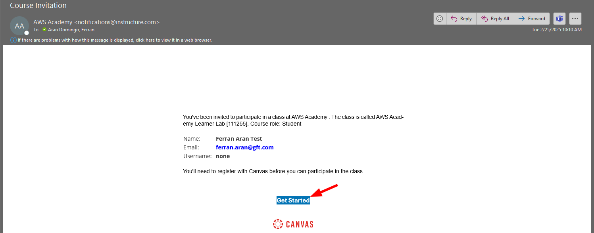
After clicking the Get Started button, you will be redirected to the AWS Academy login page. Now click the Create my account button to start the registration process, as shown below:
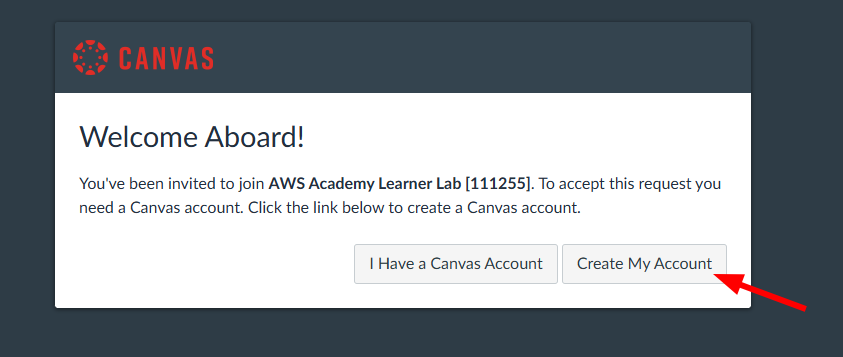
Choose a password and complete the registration process. Once you have completed the registration, you will be redirected to the AWS Academy dashboard. Congratulations! You have successfully created your AWS Academy account.
2. Accessing the AWS Dashboard
Now that you have created your AWS Academy account, you can access the AWS dashboard. The first thing you need to do is click the Courses tab (1) on the left side of the screen. You will see a list of courses available to you. Click the course AWS Academy Learner Lab (2), as shown in the screenshot below:
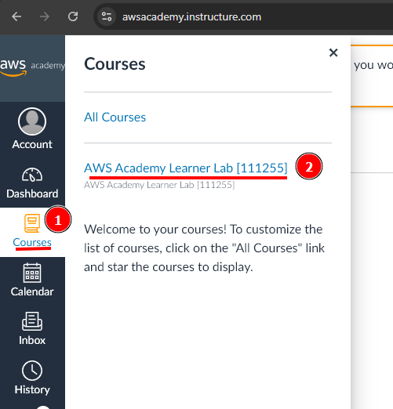
The course AWS Academy Learner Lab is the course you will use for these practical labs.
Now we need to look for the Modules tab (1) on the left side of the screen. Click on it and you will see a list of modules available to you. Click on the AWS Academy Learner Lab module (2), as shown below:
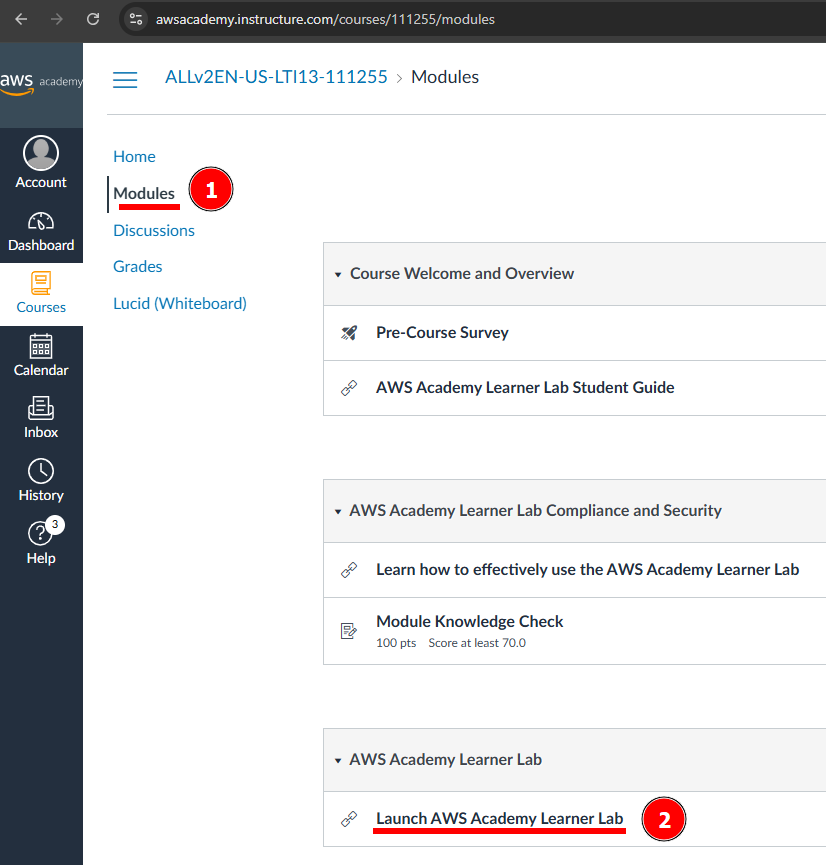
You will now be asked to accept the course terms and conditions. Do this by scrolling to the bottom of the page and clicking the button I Agree.
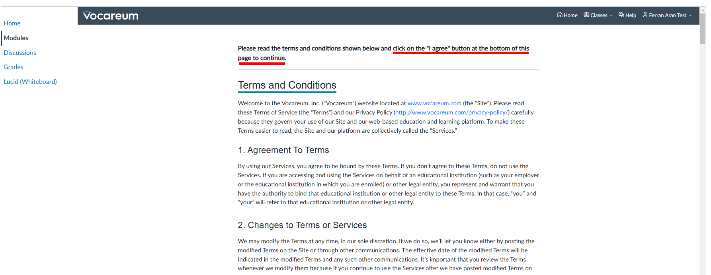
After accepting the terms and conditions, you just need to click the button Start Lab.
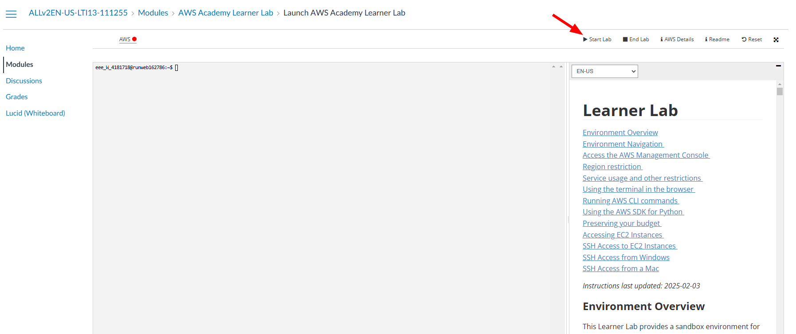
Now give it a few minutes to load. You will see this animation while the lab is being prepared for you:
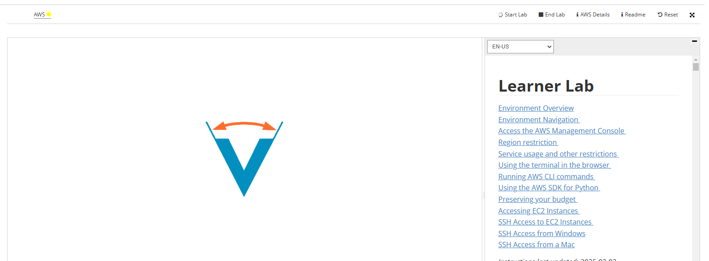
Finally, when the lab is ready, you will see that the dot next to AWS is green. You will also see a timer counting down from 4 hours. This is the time you have to work in the lab. To the left of the timer, you will see your budget status. You have a budget of $50 to spend on AWS services. Click on AWS to access the AWS dashboard, as shown below:
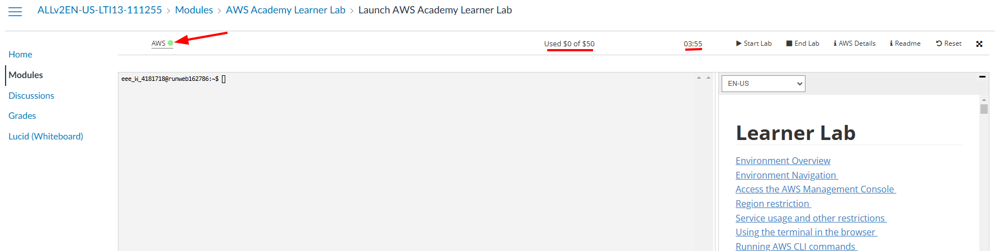
The labs are a real AWS environment, so it’s important to be careful with resources and your actions.
- If you exceed the $50 budget, you will no longer have access to the AWS dashboard and you will lose your work. Make sure to monitor your budget — it is each student’s responsibility to stay within the limit.
- The labs last for 4 hours. Once the 4 hours have passed, the session will expire and you will not be able to access the AWS dashboard. However, this does not mean you will automatically lose your work.
- The tasks and resources you have created (such as EC2 instances, S3 buckets, etc.) will remain accessible between sessions, as long as you do not delete them manually. You can restart the lab as many times as you want, but it is good practice to stop or shut down services you no longer need to avoid consuming unnecessary resources by clicking Reset.
- Therefore, if you start a lab and leave it unfinished, you will be able to resume it in a later session.Per tant, si comences un laboratori i el deixes a mig fer, podràs reprendre’l en una sessió posterior.
Great! You have now accessed the AWS dashboard. You will see a screen similar to the one below:

3. Creating an SSH key pair
The SSH key is a security mechanism that enables secure authentication between two systems. The Amazon EC2 server holds the public key, and the client (your local computer) holds the private key. When the client connects to the server, the server checks whether the client’s public key matches the server’s private key. If the keys match, the client connects to the server. Therefore, the private key must never be shared with anyone, while the public key can be shared freely and used on multiple servers. Currently, there is no mechanism to obtain the private key from the public key.
To create an SSH key pair, we will use the ssh-keygen command. This command is available on most operating systems, including Linux, macOS, and Windows (via PowerShell or Windows Subsystem for Linux - WSL). If you are using Windows and do not have access to ssh-keygen, you can use tools like PuTTYgen to generate SSH keys.
This command has several parameters that allow you to customize the SSH key. The most common parameters are:
-t: Specifies the encryption type of the key. The most common types are rsa, dsa, ecdsa, and ed25519.-f: Specifies the name of the file where the key will be saved.-b: Specifies the length of the key in bits.
The first step to create the SSH key pair is to make sure the .ssh directory exists. To do this, open a terminal on your local computer and type the following command:
mkdir .sshIf the .ssh directory already exists, you will get an error indicating that the directory already exists. This is normal; it simply means the directory was already there.
Now we will create the SSH key pair. Type the following command:
ssh-keygen -t rsa -f .ssh/aws-keypairYou will be asked to enter a passphrase. You can leave it empty by pressing Enter twice (I recommend doing this for simplicity; otherwise, you will have to enter the passphrase every time you connect to the remote machine). You should see an output similar to the following:
Generating public/private rsa key pair.
Enter passphrase (empty for no passphrase):
Enter same passphrase again:
Your identification has been saved in .ssh/aws-keypair
Your public key has been saved in .ssh/aws-keypair.pub
The key fingerprint is:
SHA256:uhINFvYaJh6MbwFQCXdZyrW7W46jFGHUhLglDgQ5OYE ferran@DESKTOP-0841
+---[RSA 3072]----+
|XBooo*+ |
|E.++*o.. |
| O ==o. |
|. B.=... |
| o *.=. S |
| + o..o |
| . ..o . |
| .. .* |
| .o+.. |
+----[SHA256]-----+ssh-keygen is the command to generate the key pair. The -t rsa option specifies the type of key to create, in this case an RSA key, and -f .ssh/aws-keypair specifies the filename for the key pair. You can name the file whatever you like, but it’s important to remember the name you choose. In this example, we are naming it aws-keypair. I recommend using the same name to avoid confusion later.
It is essential to understand how public and private keys work and how they are used to establish a connection SSH, see aquest vídeo.
We can check the contents of the directory .ssh with:
ls .sshWe should now see two files, aws-keypair and aws-keypair.pub. The first is the private key and the second is the public key. The private key should never be shared with anyone, while the public key is the one that should be shared with the remote machine. A useful command to inspect the contents of a file is `cat. For example, to view the contents of the public key, type the following command:
cat .ssh/aws-keypair.pubYou can also inspect the contents of the .ssh folder and the files inside it using the File Explorer (or Finder on Mac devices). But be careful — by default, folders and files that start with a dot, . (like .ssh) are hidden in most file explorers, and if you want to see them, you’ll need to enable the option to show hidden files. Check this tutorial to see how to do it on your operating system.
Another thing to keep in mind is that file extensions (i.e., the part of the file name that comes after the last .) are also usually hidden. This means that in the File Explorer you might see two files named aws-keypair when in reality one is aws-keypair and the other is aws-keypair.pub. Here’s [a tutorial]https://www.gottheknack.com/a-how-to/file-systems/file-ext-and-details-view/file-ext-and-details-view.html) on how to show file extensions on your operating system.
You don’t need to worry about any of this if you’re using the terminal — the terminal will show files and their extensions as they are. However, to view hidden files and folders (those that start with a .), you’ll need to use the command ls -a.
ls -a .sshWe have created an SSH key pair that we can use to connect to remote machines. Next, we will import our public key into AWS.
4. Importing the public key into AWS
Now that we’ve created our SSH key pair, we need to import the public key into AWS so we can use it to connect to the EC2 instances we’ll create later. To do this, we need to go back to the AWS dashboard, which is where we left off after completing Step 2.
Now we’ll go to the search bar and look for the EC2 service. Type EC2 into the search bar and click on the EC2 service, as shown below:
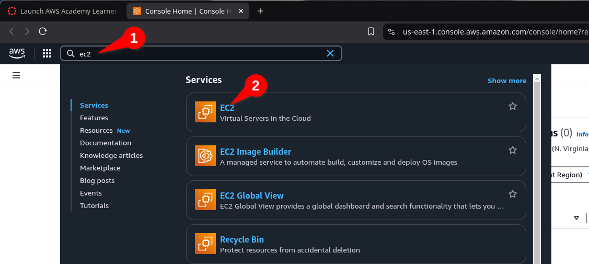
Ara veureu el tauler d’EC2. A la part esquerra de la pantalla, veureu una llista d’opcions. Feu clic a Import key pair, com es mostra a continuació:
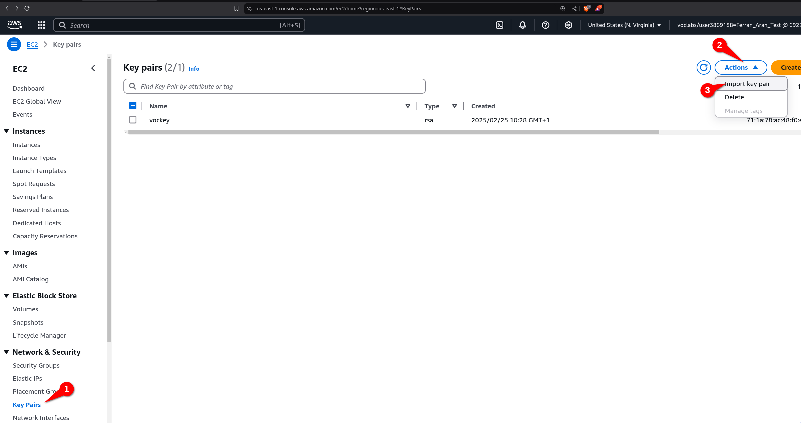
Now you need to give a name to the key pair. You can name it whatever you like, but I suggest naming it aws-keypair to keep things simple. You can now insert the public key into the text box, or you can click the Browse button to select the public key file from your computer. Just click Browse, navigate to the .ssh folder, and select the aws-keypair.pub file. But remember, the file must be the public key file, not the private key file. That means the file must have the .pub extension. Once you’ve selected the file, click Import Key Pair.
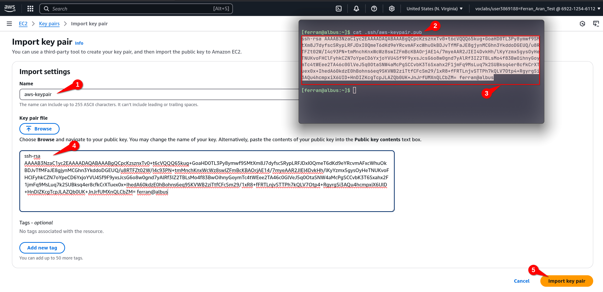
Remember, as explained in the previous note, you might not see the .ssh folder in the file explorer, and you might not see the .pub extension of the file. If you’re having trouble with this, I recommend using the terminal to copy the contents of the file, as shown in the screenshot above.
You should now see the key pair you just imported in the list of key pairs. There will probably be another key pair there — that’s fine, you can ignore it. Perfect! You’ve now imported the public key into AWS. Next, we’ll create an EC2 instance and configure it to use the key pair we just imported.
5. Creating an EC2 instance
The first step will be to go to the EC2 dashboard. You can do this by typing EC2 into the search bar and clicking on the EC2 service, just like we did at the beginning of Step 3:
Once you’re on the EC2 dashboard, click on Instances > Launch Instance, as shown below:
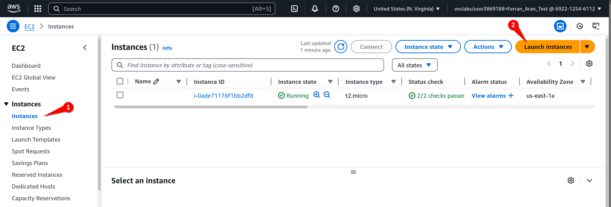
Leave everything as it is except for the Key pair (login) option (you’ll need to scroll down to find it). Click the dropdown menu and select the key pair you imported earlier. In this case, it should be aws-keypair. Click Launch instance, as shown below
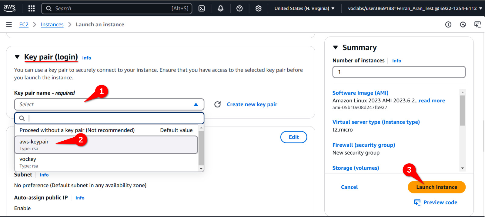
We now have a running EC2 instance with our public key imported. This means we have a remote machine on AWS that we can connect to from our local computer using SSH. Let’s see how to do that.
6. Connecting to the EC2 instance
Before connecting to the remote machine, I want you to try a few commands on your local computer that we will repeat once we are connected to the remote machine. One of the commands is pwd, which stands for print working directory, as mentioned earlier. This command will show you the path to the directory you are currently in. The other command is whoami, which will show you the username you are logged in with. Try these commands on your local computer and remember the output. We will repeat them once we are connected to the remote machine.
Below is the output I get on my local computer:
PS C:\Users\fnao> pwd
PS C:\Users\fnao> whoami
gft\fnao
PS C:\Users\fnao>The local computer I’m using is a Windows laptop, so the output will be different from yours if you’re using a Mac or a computer running Linux. Replace fnao with your own username and C:\Users\fnao with the path to your user directory.
o connect to the EC2 instance, we will use the terminal on our local computer, just as we did at the beginning Step 3, Open a terminal on your local computer. We will use the ssh command to connect to the remote machine. The command will look like this:
ssh -i .ssh/aws-keypair ec2-user@<public-ip>Haureu de substituir <public-ip> per la IP pública de la instància EC2. Per trobar la IP pública, torneu al tauler d’EC2 i feu clic a Instances a la part esquerra de la pantalla. Veureu una llista d’instàncies, feu clic a la instància que heu creat. Veureu la IP pública a la part inferior de la pantalla com es mostra a continuació:
You will need to replace <public-ip> with the public IP of the EC2 instance. To find the public IP, go back to the EC2 dashboard and click on Instances, on the left side of the screen. You will see a list of instances—click on the one you created. You will see the public IP at the bottom of the screen, as shown below:
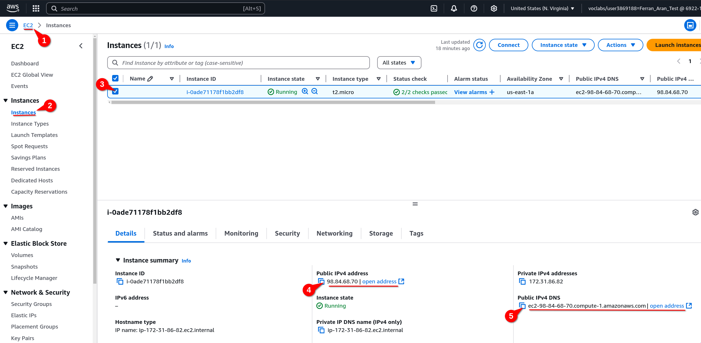
Both the Public IPv4 address and the Public IPv4 DNS can be used as <public-ip> in the ssh command. Copy whichever you prefer and paste it into the ssh command. The command should look something like this if you use the IP address:
ssh -i .ssh/aws-keypair ec2-user@98.84.68.70or like this if you use the DNS:
ssh -i .ssh/aws-keypair ec2-user@ec2-98-84-68-70.compute-1.amazonaws.comIf this is the first time you’re connecting to the remote machine, you’ll get a warning. This is normal—just type yes and press Enter. You should now be connected to the remote machine. You’ll see a message similar to the following:
, #_
~\_ ####_ Amazon Linux 2023
~~ \_#####\
~~ \###|
~~ \#/ ___ https://aws.amazon.com/linux/amazon-linux-2023
~~ V~' '->
~~~ /
~~._. _/
_/ _/
_/m/'
Last login: Sun Mar 2 09:50:33 2025 from 79.156.58.43
[ec2-user@ip-172-31-86-82 ~]$Investigate the meaning and importance of the message you accept when connecting to the remote machine for the first time. Why is it important to accept this message? What does it mean? What are its implications?
You are now connected to the remote machine. It’s important to understand that from this point on, the commands we type will be executed on the remote machine, not on our local computer. To verify this, type the commands pwd and whoami as we did on our local computer. You’ll see that the output is different. Below is the output I get on the remote machine:
[ec2-user@ip-172-31-86-82 ~]$ pwd
/home/ec2-user
[ec2-user@ip-172-31-86-82 ~]$ whoami
ec2-user
[ec2-user@ip-172-31-86-82 ~]$7. Working in the EC2 instance
This step will cover file transfer between the local machine and the remote machine. Additionally, we will use a Python script to simulate a workload and generate a graph from a data file.
7.1. Transferring a data file to the EC2 instance EC2
To transfer a data file (workload.csv) to the EC2 instance, we will use SFTP (SSH File Transfer Protocol). SFTP is a secure protocol for transferring files between a local computer and a remote machine. We will use the same SSH key pair we created earlier to authenticate to the EC2 instance.
- Download the data file
workload.csvto your local computer. - Use SFTP to upload the data file to the EC2 instance:
# Replace <public-ip> with the public IP of your EC2 instance
sftp -i .ssh/aws-keypair ec2-user@<public-ip>:/home/ec2-user/lab01-workload-simulation
# Download the workload.csv file from the remote directory to your local machine
put workload.csv
# Close the SFTP session
exit7.2. Setup and Python script execution in the EC2
First, we need to prepare the environment on our EC2 instance. This includes installing the necessary tools to run our Python script and manage data. So, we’ll connect to the EC2 instance via ssh as we did earlier and run the following commands to install the required tools.
- Connect to the EC2 instance:
ssh -i .ssh/aws-keypair ec2-user@<public-ip>- System update:
sudo yum update -y- Check if Python is installed, and if not, install it:
python3 --version # Comprova si Python està instal·lat
sudo yum install python3 -y # Instal·la Python si no està instal·lat- Create a virtual environment for Python:
python3 -m venv myenv
source myenv/bin/activate- Check the virtual environment with a
Hello World:
python3 -c "print('Hello World from the virtual environment')"- Install the necessary libraries for our script:
pip install pandas matplotlib psutil- Create a virtual environment for Python:
mkdir lab01-workload-simulation
cd lab01-workload-simulation- Create the Python script file, using
viorvim:
vi simulate_workload.py#!/usr/bin/env python3
import sys
import time
import pandas as pd
import matplotlib.pyplot as plt
def main():
if len(sys.argv) != 2:
print("Ús: python3 simulate.py workload.csv")
sys.exit(1)
csv_file = sys.argv[1]
df = pd.read_csv(csv_file)
print("Simulació d'ús de CPU i memòria (amb gràfic)\n")
plt.ion()
fig, ax = plt.subplots()
cpu_vals, mem_vals, ts_vals = [], [], []
for i, row in df.iterrows():
ts = row['timestamp']
cpu = row['cpu_usage']
mem = row['memory_usage']
print(f"[{ts}] CPU: {cpu:.2f}% | MEM: {mem:.2f}%")
ts_vals.append(ts)
cpu_vals.append(cpu)
mem_vals.append(mem)
ax.clear()
ax.plot(ts_vals, cpu_vals, label="CPU (%)", color="tab:red", marker="o")
ax.plot(ts_vals, mem_vals, label="Memòria (%)", color="tab:blue", marker="x")
ax.set_ylim(0, 100)
ax.set_xlabel("Temps")
ax.set_ylabel("Ús (%)")
ax.set_title("Simulació de càrrega del sistema")
ax.legend()
plt.xticks(rotation=45)
print("\n--- Fi de la simulació ---")
plt.savefig("workload_analysis.png")
if __name__ == "__main__":
main()- Run the script with the following command:
python3 simulate_workload.py workload.csvNow it should work correctly and generate an image file with the workload graph. You can check that the image file has been created correctly using the `ls -l command. Once the image has been generated, you can use SFTP to download it to your local machine:
8. Cleanup
Once you’ve finished the lab, it’s important to shut down the EC2 instance to avoid unnecessary costs. To do this, go back to the EC2 dashboard and select the instance you created. At the top of the screen, click on Instance state and then on Terminate instance.